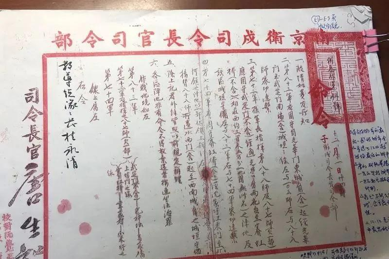

一个人 / 84天 / 3万余字
程瑞芳：在难民所里留下证词
程瑞芳是金陵女子文理学院舍监。南京沦陷前后，她协助魏特琳管理难民收容所，并在1937年12月8日至1938年3月1日写下三万余字日记。
“真是凄惨，不知明天还要闹出什么事来呢！” 《程瑞芳日记》，1937年12月13日
这部日记记录收容所管理、妇女儿童处境和城内暴行，后来成为南京大屠杀档案的重要组成部分，也能与《魏特琳日记》和《拉贝日记》相互印证。
查看程瑞芳日记来源1937.11—1938.5 / 南京公共记忆档案
从下关到中华门，从金陵女大到鼓楼医院，把分散在档案、日记、报刊与口述中的普通人行动重新放回城市空间。
进入纪念馆南京保卫战研究专题显示 12 个点位
02 / CHRONOLOGY
南京保卫战不是突然发生的一场城垣战斗。疏散、空袭、迁都、安全区筹设与城陷后的救援，共同构成民众行动的历史背景。

南京城市纪事 / CHRONICLE OF THE CITY
九个节点，记录一座首都如何在战争、迁都、围城与沦陷中改变普通人的生活。03 / ACTIONS
同一个人可能在一天内转换多个角色，分类记录的是行动功能。
04 / EVIDENCE
档案中的数字、日记中的目击和口述中的细节承担不同证明任务。
一个人 / 84天 / 3万余字
程瑞芳是金陵女子文理学院舍监。南京沦陷前后，她协助魏特琳管理难民收容所，并在1937年12月8日至1938年3月1日写下三万余字日记。
“真是凄惨，不知明天还要闹出什么事来呢！” 《程瑞芳日记》，1937年12月13日
这部日记记录收容所管理、妇女儿童处境和城内暴行，后来成为南京大屠杀档案的重要组成部分，也能与《魏特琳日记》和《拉贝日记》相互印证。
查看程瑞芳日记来源档案阅读
南京市档案馆藏《中国红十字会南京分会埋尸记录》按工作队、日期和地点登记掩埋数量。第一工作队在和平门一带记录5,704具，第二工作队在下关一带记录3,425具；两组统计的时间段并不完全等同。
崇善堂档案又记录了4支“崇字掩埋队”、16个收尸处以及109,363与112,267两种统计口径。数字差异来自统计范围、时间和材料形成过程，不能直接相加或简单平均。
查看红十字会埋尸档案页面中的来源编号均可直接打开对应书目、档案说明或纪念馆专题。
证据问答演示
05 / CLASSROOM
勾选完成状态，进度保存在当前浏览器中。
从家庭人口、路费、交通和照护责任出发，讨论谁能够离开、谁被迫留下。
比较红十字会、崇善堂和战后统计表的工作队、时间、地点与统计范围。
从警察、校工、医护和慈善人员的行为，分析城市运行依赖哪些人和网络。
READING THE CITY
南京保卫战中的民众贡献分布在码头、城门、医院、学校、教堂、难民所和慈善机构之间。把这些地点放回地图，能看见资源如何转移、风险如何分布，以及普通人在极端条件下的选择与代价。